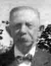
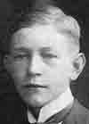

|
VIBY i gamla tider |
|
||
|---|---|---|---|
|
|
|||
|
Redogörelse av Arne Svensson den 25 januari 2005 |
|||
|
|
 Alla känner vi till det paulssonska huset på Viby nr 6. Huset flyttades
från Kiaby och är ett s.k. bolehus. Vid återuppbyggandet och snickrandet
av en veranda var Jöns Sonesson (Söne) behjälplig. Alla känner vi till det paulssonska huset på Viby nr 6. Huset flyttades
från Kiaby och är ett s.k. bolehus. Vid återuppbyggandet och snickrandet
av en veranda var Jöns Sonesson (Söne) behjälplig.Sven Paulssons far hette Paul Svensson och hade sina rötter i Kiaby/Fjälkinge. Han levde mellan 1818 och 1895. Sven Paulsson var skomakargesäll och vandrade kring bland bönderna och lagade selar vid sidan av skomakaryrket. Han hade sedermera sin verkstad i hemmet i rummet till vänster om entrén där han pliggade och skar med hjälp av hammare  och kniv, vaxningen inte att förglömma. Han hade också en ko,
och barnbarnen Erik och Inga fick gå för att hämta mjölk till Gottfrid och
Agda. Sven Paulsson efterträdde Pernilla Orrgren som kyrkvaktmästare och
verkade som sådan fram till c:a 1940, då han var 82 år gammal. och kniv, vaxningen inte att förglömma. Han hade också en ko,
och barnbarnen Erik och Inga fick gå för att hämta mjölk till Gottfrid och
Agda. Sven Paulsson efterträdde Pernilla Orrgren som kyrkvaktmästare och
verkade som sådan fram till c:a 1940, då han var 82 år gammal.
Sönerna Gottfrid och Nils lärde båda till snickare i resp. Vinslöv och Knislinge. År 1923, samma år som Svens hustru Ingar gick bort, byggde de två huset och verkstaden vid Byvägen, numera Byholmsvägen. Där verkade de fram till 1940 bortsett från en period då Gottfrid arbetade vid lokstallarna i Kristianstad. Nils efterträdde sin far som kyrkvaktmästare efter 1940. Gottfrid fortsatte verksamheten i snickeriverkstaden och tog snart sonen Erik till lärling. Nils Paulsson med systrarna Ester, Anna och Sigrid När Gottfrid dog 1951 tog Erik över och drev verkstaden till 1965, då
han gick till LB-hus med uppgiften att snickra köksinredningar och
trappor. I verkstaden jobbade under en tid även Börje Karlsson, en annan
av byns skickliga snickare. Hos Paulsson kunde man beställa det mesta, som
en snickare kunde ta fram. Att göra trappor och vagnshjul blev
specialiteter, som Erik stod för. Man tillver En bisyssla vid verkstaden sköttes vid en rökugn, där röken från spånet
i verkstaden svept in mången skinka och sidfläsk. Resultatet blev den mest
fantastiska rökta mat. För 10 öre per 1000-literstunna kunde man få vatten
från den gamla bränneribrunnen norr om verkstaden. Bränneriet i trä hade
brunnit och med en pump, driven av el från verkstaden, fylldes ganska
snabbt karen till brädden. !0-öringen var en ersättning för strömmen till
elmotorn, som drev pumpen. Här följer raden av kyrkvaktmästare:
En biskopsvisitation väckte alltid uppståndelse. Sven Pålsson ofta kärv i sina utlåtanden, var i tjänst och när biskop Billling skulle träda in i kyrkan valde en kaja att avbörda sig sitt tarminnehåll på biskopens hatt. Efteråt flög det ur Sven Paulsson att ”kajan väl inte tyckte hatten var något bättre värt än att skita på”. Många av våra medlemmar har säkert ett antal episoder att förtälja Att
ringa i kyrkklockorna var före elektrifieringen ett grannlaga arbete. Man
måste kliva upp för de många trapporna, öppna alla tornluckorna, lossa på
klossarna, som stabiliserade kläpparna, dra igång de mäktiga klockorna med Ett stort tack Erik! |
Familjen Paulsson
Paul Svensson 1818-1895  Sven Paulsson 1858―1940 Nils Paulsson 1898―1976  Gottfrid Paulsson 1892―1951 Erik Paulsson 1925 |
|
|
|||
|
|||
|
|
|||
|
|
|||